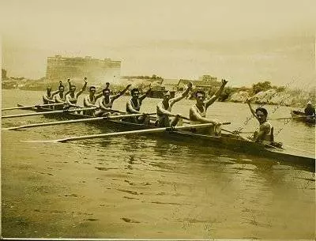
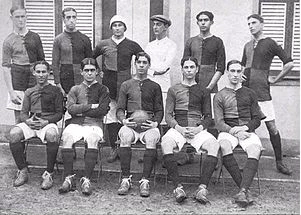
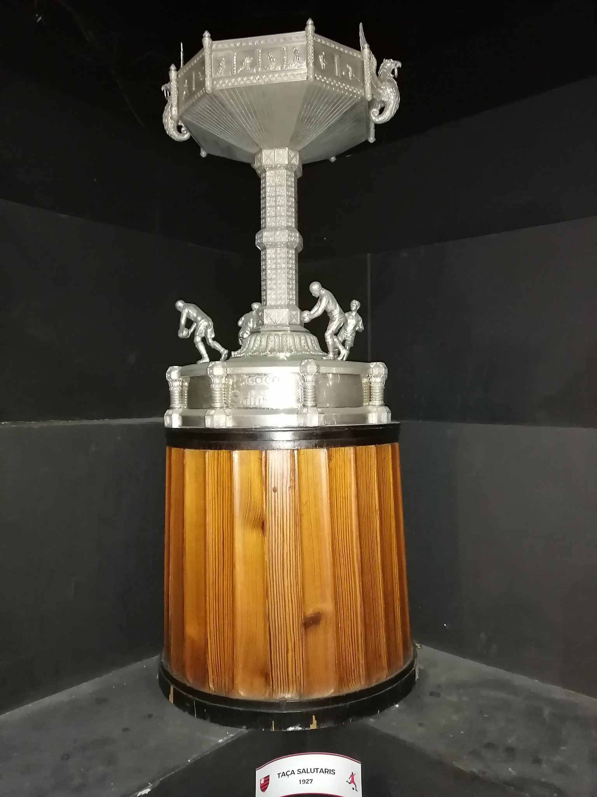
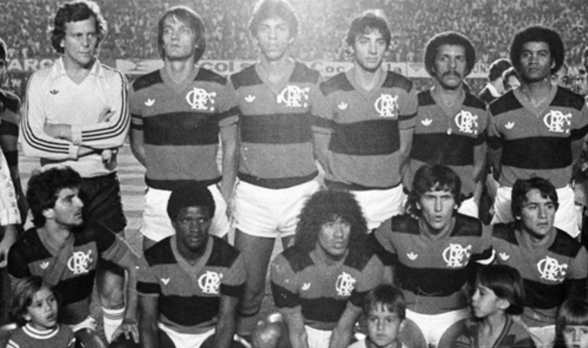

História do Flamengo
O surgimento
No final do século XIX, o remo dominava o Rio de Janeiro. O futebol ainda dava seus primeiros passos em
alguns clubes, mas era visto com certa desconfiança pela sociedade carioca. A ideia de formar um grupo
organizado para disputar competições de remo com clubes de outros bairros surgiu entre jovens do bairro
do Flamengo, no Café Lamas, no Largo do Machado.
Nestor de Barros, José Agostinho Pereira da Cunha, Felisberto Laport, Augusto Lopes, Mário Spindola e
José Félix da Cunha Meneses compraram um barco, batizado de "Pherusa", e o reformaram.
Em 6 de outubro de 1895, acompanhados por Maurício Rodrigues Pereira e Joaquim Bahia, partiram da Ponta
do Caju rumo à Praia do Flamengo. No entanto, enfrentaram ventos desfavoráveis e o barco virou. Bahia
nadou até a praia para buscar ajuda e, algumas horas depois, um barco chamado "Leal" resgatou os jovens
e o que restou da embarcação. Apesar de nova reforma, o "Pherusa" foi roubado e desapareceu.

A fundação
Um novo barco, denominado "Scyra", foi adquirido. Em 17 de novembro de 1895, uma reunião ocorreu na casa
número 22 da Praia do Flamengo, onde Nestor de Barros residia. Foi fundada ali a agremiação Grupo de
Regatas do Flamengo, elegendo sua primeira diretoria:
- Presidente: Domingos Marques de Azevedo
- Vice-presidente: Francisco Lucci Colas
- Secretário: Nestor de Barros
- Tesoureiro: Felisberto Cardoso Laport
Outros sócios-fundadores foram destacados, incluindo José Agostinho Pereira da Cunha, Napoleão Coelho de
Oliveira e Mário Espínola. A data oficial de fundação foi estabelecida como 15 de novembro, feriado
nacional.
Inicialmente, as cores do clube eram azul e ouro em listras horizontais largas. Em 1898, por proposta de
Nestor de Barros, foram alteradas para as atuais: vermelho e preto.
Novos barcos foram adquiridos, e o Flamengo começou a se destacar nas competições. Na I Regata do
Campeonato Náutico do Brasil, em 5 de junho de 1898, conquistou sua primeira vitória com a baleeira a
dois remos "Irerê". Antes disso, o clube acumulava colocações secundárias, ganhando o apelido de "Clube
de Bronze". Em 1902, devido ao crescimento, tornou-se oficialmente Clube de Regatas do Flamengo.
Uma curiosidade é que os atletas do Flamengo já haviam praticado futebol antes da fundação do
departamento oficial. Em 25 de outubro de 1903, disputaram um amistoso contra o Botafogo.

"O Mais Querido do Brasil"
Em 1927, um concurso promovido pela água mineral Salutaris e pelo Jornal do Brasil elegeu o "clube mais
querido do Brasil". Os torcedores votaram pelo rótulo das garrafas d'água ou cupons no jornal. O
Flamengo venceu com 254.850 votos e recebeu a Taça Salutaris, hoje exibida ao lado de troféus como a
Copa Libertadores e a Taça Intercontinental de 1981.
Outro fator que ampliou a popularidade do Flamengo foi a Segunda Guerra Mundial. Antenas instaladas pelos
Estados Unidos em Natal-RN e Belém-PA para detectar sinais inimigos também transmitiam jogos de futebol
pelo rádio para o Norte e Nordeste do país.
Na época, o Rio de Janeiro era a capital do Brasil e exercia grande influência. As campanhas vitoriosas
do Flamengo nos estaduais da década de 1940 ajudaram a consolidar sua popularidade. Pesquisas atuais
confirmam que o Rubro-Negro tem a maior torcida do Brasil.

O início no futebol:
A partir de 1902, o remo passou a dividir espaço com o futebol na preferência popular. Muitos associados
do Flamengo também eram sócios do Fluminense e vice-versa. Alberto Borgerth simbolizava essa relação,
remando pelo Flamengo pela manhã e jogando pelo Fluminense à tarde.
Em 1911, uma cisão no Fluminense levou diversos jogadores ao Flamengo. Em assembleia no dia 8 de novembro
de 1911, decidiram fundar um departamento de esportes terrestres, liderado por Alberto Borgerth.
Inicialmente, cogitou-se aderir ao Botafogo ou reforçar o Paysandu, mas essas ideias foram descartadas.
Assim, o Flamengo passou a abraçar também o futebol, consolidando-se como um dos maiores clubes do
Brasil.
